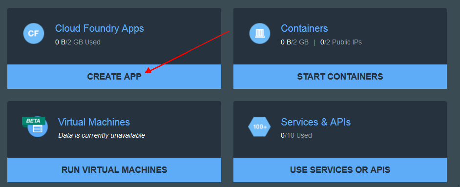
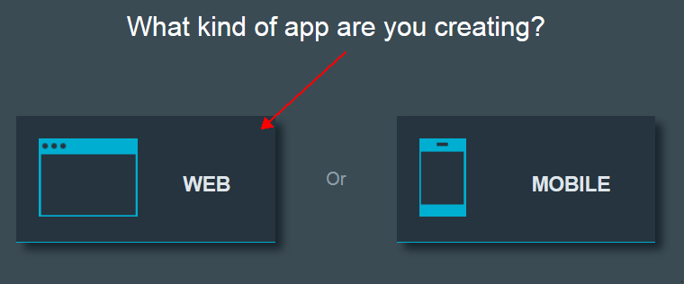
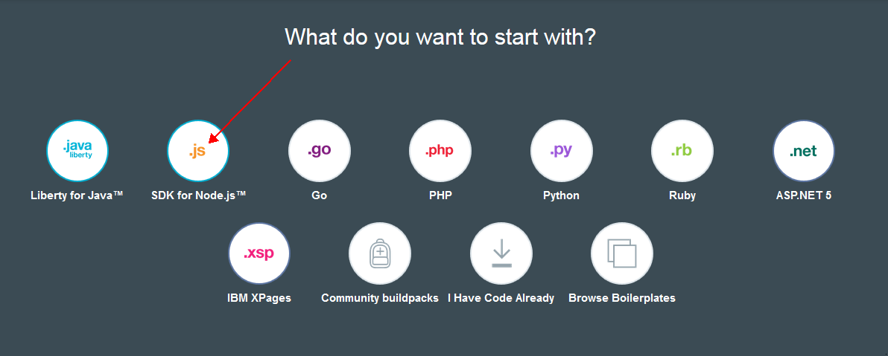
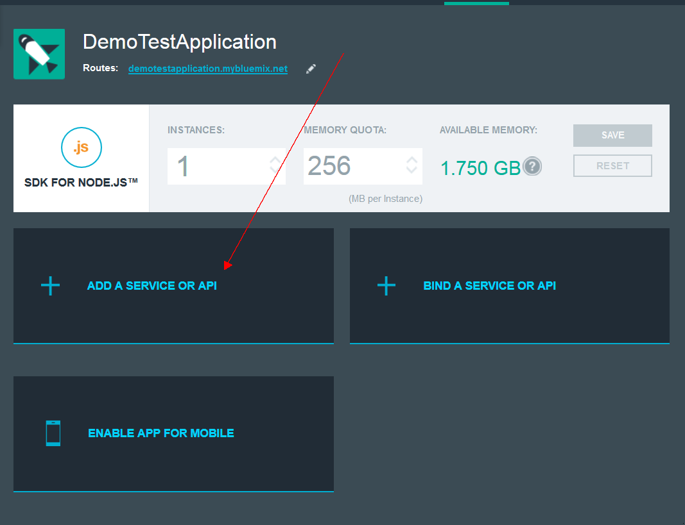
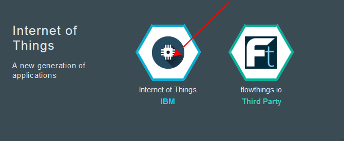
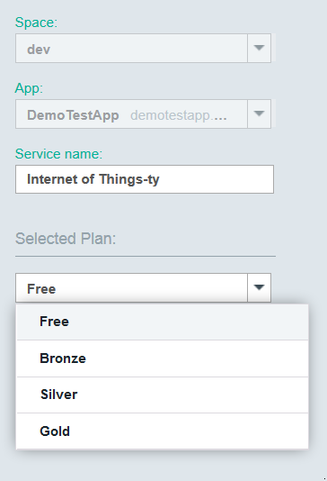
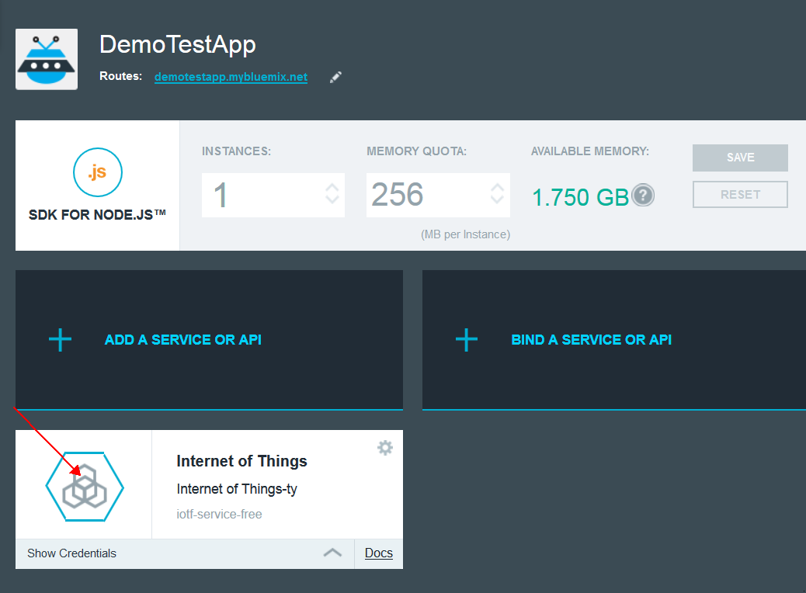
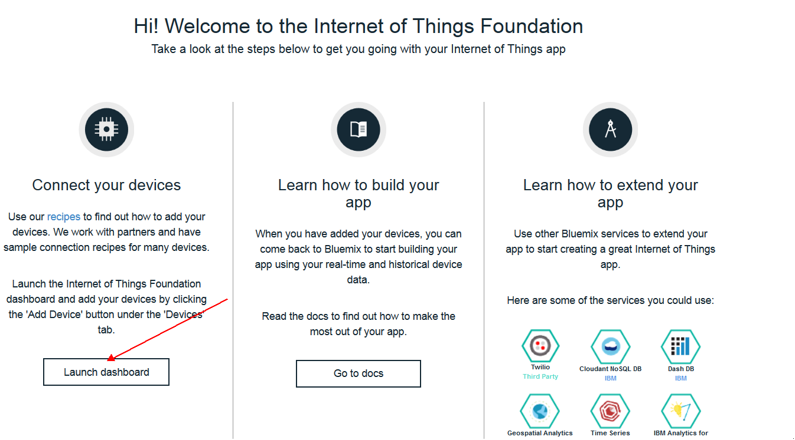
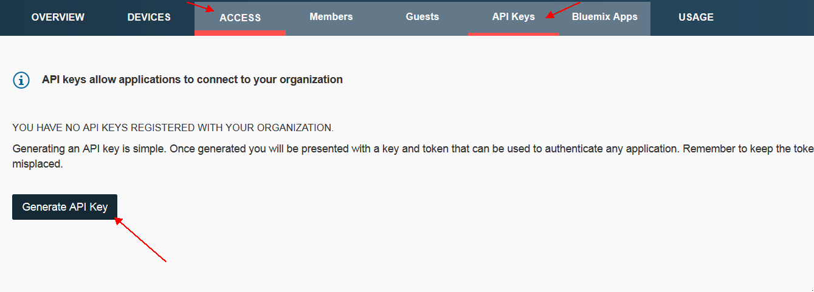

Navigate to the Bluemix home page. In the upper right hand corner select "Sign Up" or if you already have an account on Bluemix, simply log in.
Once you have successfully signed up or signed into Bluemix you will want to navigate to your Bluemix dashboard. The Bluemix dashboard is where you will create your new application. First, we will select "Create App" under the Cloud Foundry Apps section of our dashboard.
Next we will choose a web or a mobile app. For this example we will choose a Web App.
Next Bluemix will ask us what we want to start with, for this application we will choose SDK for Node.js
Finally, we will give our app a name. For my example I will choose DemoTestApplication, you can name it anything you want. Once you find a name for your application, Bluemix will create it and begin to stage it for you. Once this process is finished navigate back to your dashboard and scroll down to see your new app. Go ahead and click on it. Once we've selected the app you should see a button "ADD A SERVICE OR API", click on it
From here we will scroll down to the bottom, the very last section is Internet of Things, and choose Internet of Things.
On the right pane of the next screen you will be able to choose your Service name, and what plan you would like to use. Once you've done this Press USE.
It will probably ask you to restage your application, if it does say yes you'd like to restage. Return to the dashboard and select your application again once it's finished restaging, once you've opened your application you should now see Internet of Things as an associated service.
From here we will select will select Launch dashboard from the left pane of options.
Once the dashboard has launched we, navigate to the ACCESS tab, this will open more tabs, select API KEYS and click Generate API Key
This step is very important, once the API Key is generated you will want to copy the information and save it somewhere for your own personal reference. This information cannot be recovered, but if needed you can go back and delete and recreate a new API Key. Once you've copied the information, click generate. Now that your key is generated you are ready to begin adding devices to the IoT Foundation, the process to do that can be found here
Once you've added your devices to the IoT Foundation you are ready to begin publishing data. To do this using a Sensortag you can use the IoT Gateway Kit. The IoT Gateway Kit publishes data using node-red, which you will need to configure to publish to your application. Those instructions can be found here.